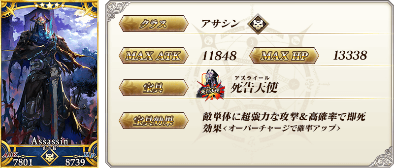
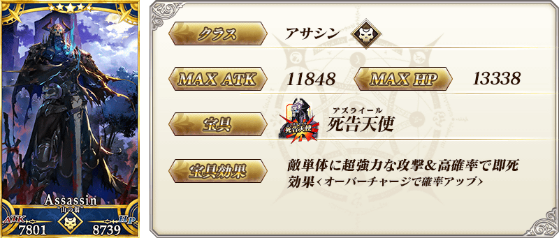
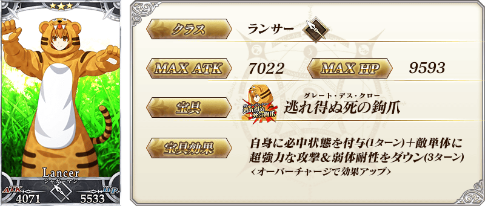
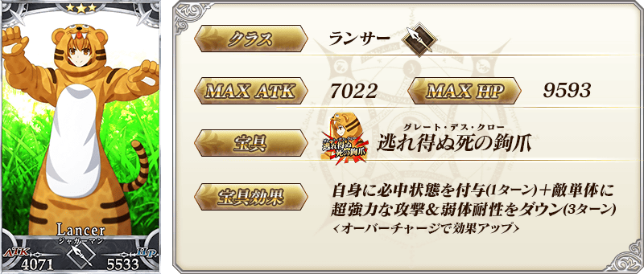
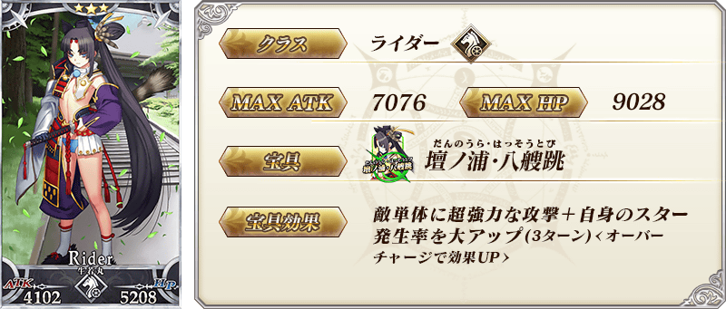
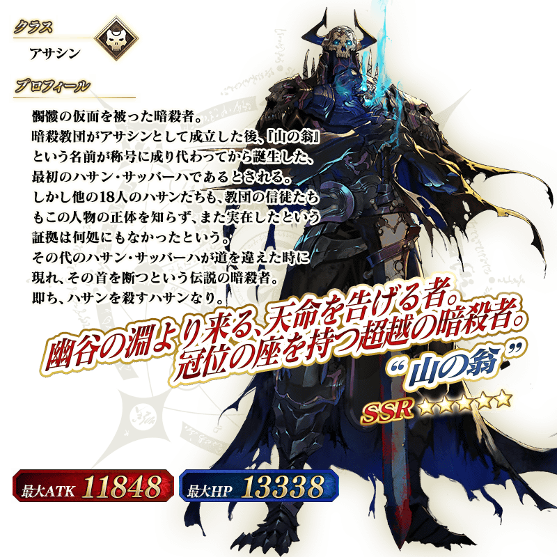

◆『TV動畫「Fate/Grand Order -絕對魔獸戰線巴比倫尼亞-」放送記念宣傳活動 第4彈 Pick Up召喚(每日交替)』期間◆
期間:2020年3月15日(日) 23:00～3月29日(日) 11:59
舉辦期間限定『TV動畫「Fate/Grand Order -絕對魔獸戰線巴比倫尼亞-」放送記念宣傳活動 第4彈 Pick Up召喚(每日交替)』！
TV動畫「Fate/Grand Order -絕對魔獸戰線巴比倫尼亞-」中也活躍的「★5(SSR)“山之翁”」以期間限定登場！
本次包含上述Pick Up 6位從者！
「★4(SR)美杜莎(Lancer)」「★4(SR)吉爾伽美什(Caster)」「★4(SR)戈爾貢」以每日交替Pick Up，「★5(SSR)“山之翁”」「★3(R)豹人」「★3(R)牛若丸(Rider)」常駐Pick Up！
Pick Up期間中，Pick Up對象從者的出現機率提升！
詳情請在聖晶石召喚畫面左下的召喚詳細確認。
11次召喚中確定1張★4(SR)以上和確定1位★3(R)以上的從者！ ※確定★4(SR)以上包含從者和概念禮裝。
◆有關從者的注意◆
※請注意「★5(SSR)奧德修斯」是被抽出對象外。
※請注意本Pick Up召喚做為每日交替，下述的從者就算舉辦期間中也有不會被抽出的日子。
・★4(SR)戈爾貢
※下述的從者在Pick Up期間結束後不會追加到故事召喚。
・★5(SSR)“山之翁”
※本Pick Up召喚的Pick Up期間中，透過故事進行所追加的下述從者就算通過各章前也能入手。
・★4(SR)戈爾貢
・★3(R)豹人
※下述的從者在Pick Up期間結束後仍會在故事召喚被抽出。
・★4(SR)美杜莎(Lancer)
・★4(SR)吉爾伽美什(Caster)
・★4(SR)戈爾貢
・★3(R)豹人
・★3(R)牛若丸(Rider)
◆『TV動畫「Fate/Grand Order -絕對魔獸戰線巴比倫尼亞-」放送記念宣傳活動 第4彈 Pick Up召喚(每日交替)』Pick Up內容◆
| Pick Up期間 | Pick Up內容 | |
|---|---|---|
| 全天Pick Up | 每日交替Pick Up | |
| 3/15(日) 23:00～ 3/17(二) 22:59 |
★5 “山之翁” ★3 豹人 ★3 牛若丸(Rider) |
★4 美杜莎(Lancer) ★4 吉爾伽美什(Caster) ★4 戈爾貢 |
| 3/17(二) 23:00～3/18(三) 22:59 | ★4 美杜莎(Lancer) | |
| 3/18(三) 23:00～3/19(四) 22:59 | ★4 吉爾伽美什(Caster) | |
| 3/19(四) 23:00～3/20(五) 22:59 | ★4 戈爾貢 | |
| 3/20(五) 23:00～3/21(六) 22:59 | ★4 美杜莎(Lancer) | |
| 3/21(六) 23:00～3/22(日) 22:59 | ★4 吉爾伽美什(Caster) | |
| 3/22(日) 23:00～3/23(一) 22:59 | ★4 戈爾貢 | |
| 3/23(一) 23:00～ 3/29(日) 11:59 |
★4 美杜莎(Lancer) ★4 吉爾伽美什(Caster) ★4 戈爾貢 |
|
※請注意會以每日交替變更Pick Up的從者。
 
※上述「★5(SSR)“山之翁”」的卡面為靈基再臨第2階段。

※上述「★5(SSR)“山之翁”」的卡面為靈基再臨第2階段。


 ※上述「★4(SR)戈爾貢」的卡面為靈基再臨第2階段。
※上述「★4(SR)戈爾貢」的卡面為靈基再臨第2階段。
 
※上述「★3(R)豹人」的卡面為靈基再臨第2階段。

※上述「★3(R)豹人」的卡面為靈基再臨第2階段。
 ※上述「★3(R)牛若丸(Rider)」的卡面為靈基再臨第2階段。
 ※上述「★5(SSR)“山之翁”」的立繪為靈基再臨第2階段。
介紹「★5(SSR)“山之翁”」「★4(SR)美杜莎(Lancer)」「★4(SR)吉爾伽美什(Caster)」「★4(SR)戈爾貢」的寶具演出！
在「Fate/Grand Order」官方網站內的公告中，以影片公開寶具演出，敬請確認。
【★5(SSR)“山之翁”】
【★4(SR)美杜莎(Lancer)】
【★4(SR)吉爾伽美什(Caster)】
【★4(SR)戈爾貢】
其他還有，『TV動畫「Fate/Grand Order -絕對魔獸戰線巴比倫尼亞-」放送記念宣傳活動 第4彈』同時舉辦！
關於詳情，請自下述橫幅確認。
■TV動畫「Fate/Grand Order -絕對魔獸戰線巴比倫尼亞-」放送記念宣傳活動 第4彈詳細情報